Dianna Huitron Cardenas
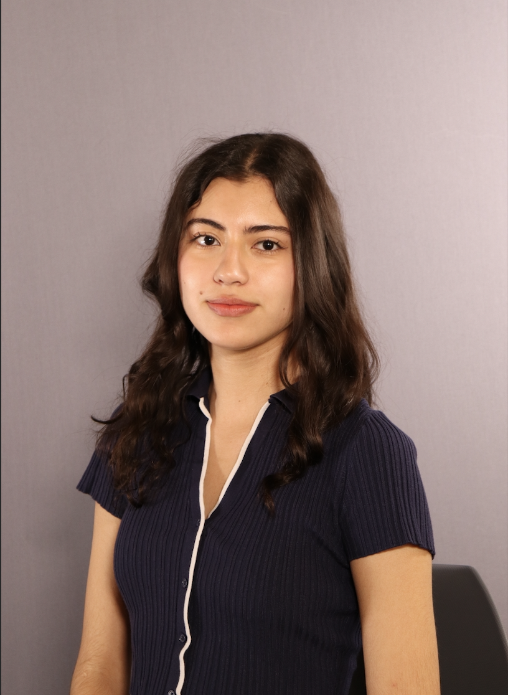
A senior at Michigan State University, studying Games and Interactive Media.
About Me
I focus on creating engaging and immersive experiences through game development and interactive media. I've designed various UI elements for games and apps for some of my projects. Being able to share the stories and experiences being presented through design is something I truly enjoy. I hope to keep growing as a designer and developer whether that is through games, web development, and other forms of interactive media!
Projects
Here are some of my projects.
Wasteless | Designathon 2025
Designed a sustainable on campus food waste management solution for a designathon competition.
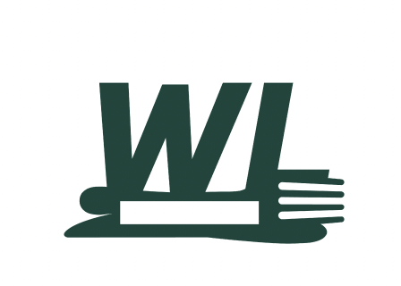
What is it?
Wasteless is a web application designed to help students reduce food waste on campus by providing a platform for reporting and tracking food waste incidents.
Description:Users are able to sign up and create an account to track their food waste and waste reduction efforts.
The Design
My team and I wanted to incorporate the theme of sustainability into the design, ensuring that the app not only functions well but also promotes environmental responsibility. We wanted to include the focus on food on the logo, and since it would mainly be used for on campus dining hall food waste, we used untensils in the design.
Along with that, I created two mockup web pages to visualize the user interface and experience. I wanted to incorporate many of the MSU colors and branding elements into the design since it would be used for an on-campus initiative.
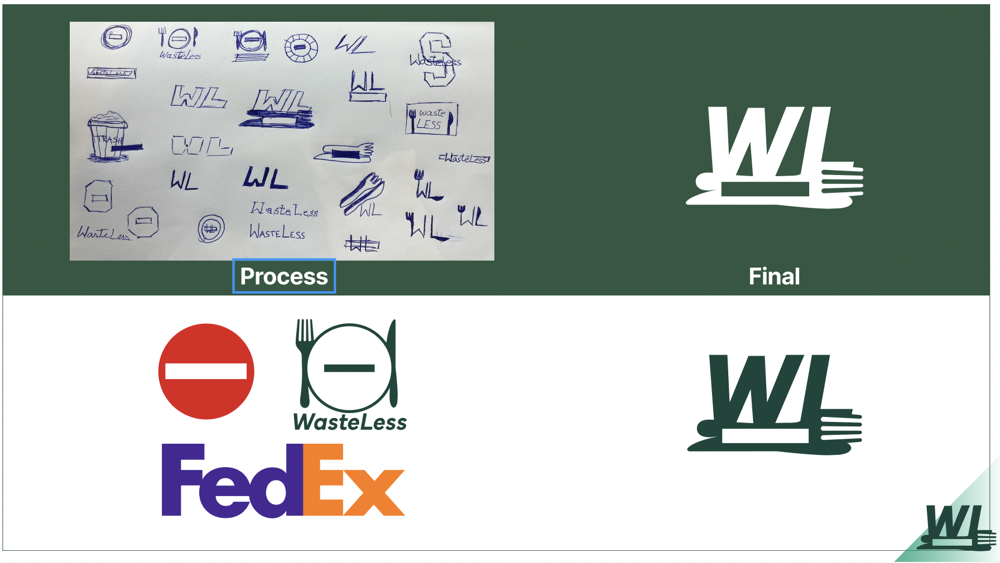
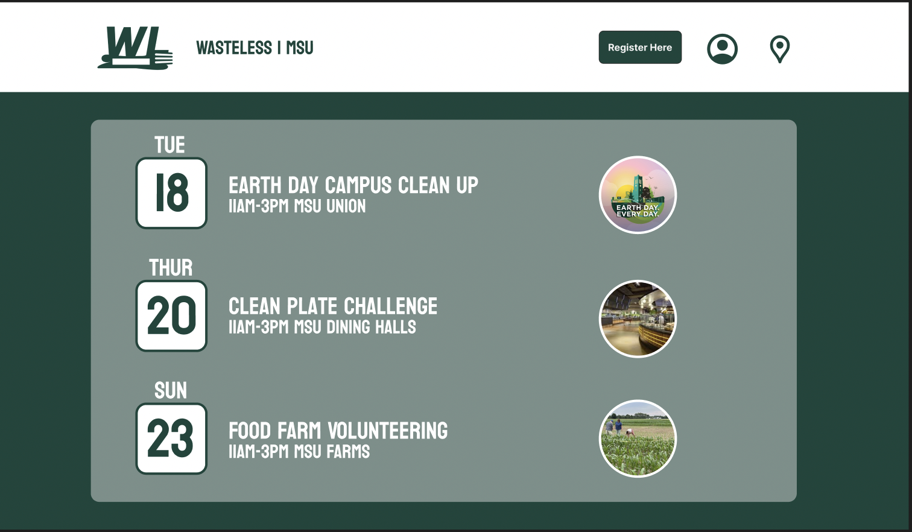
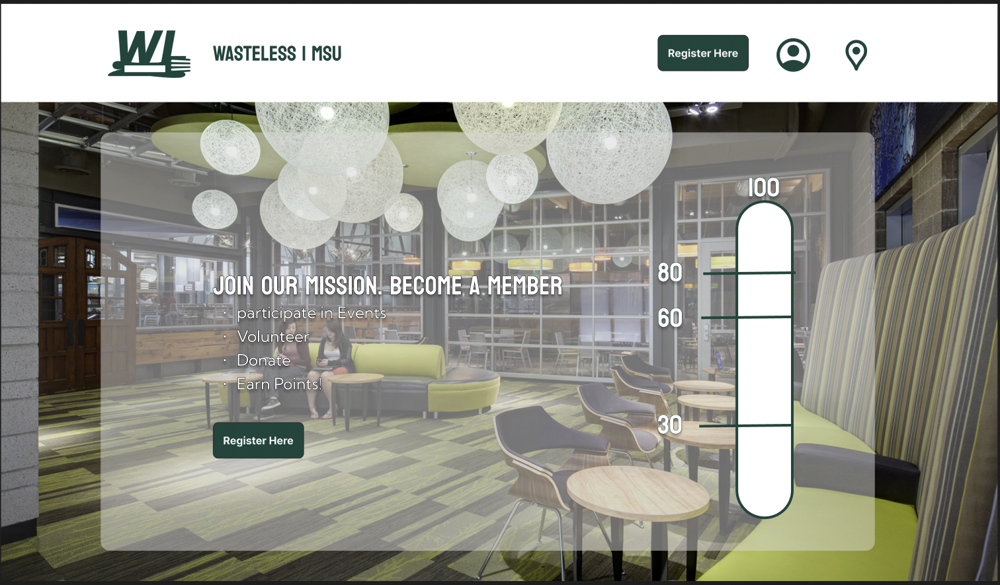
ICE ON | Mobile Game App Design
Focused on designing engaging user interfaces for a figure skating mobile game app.
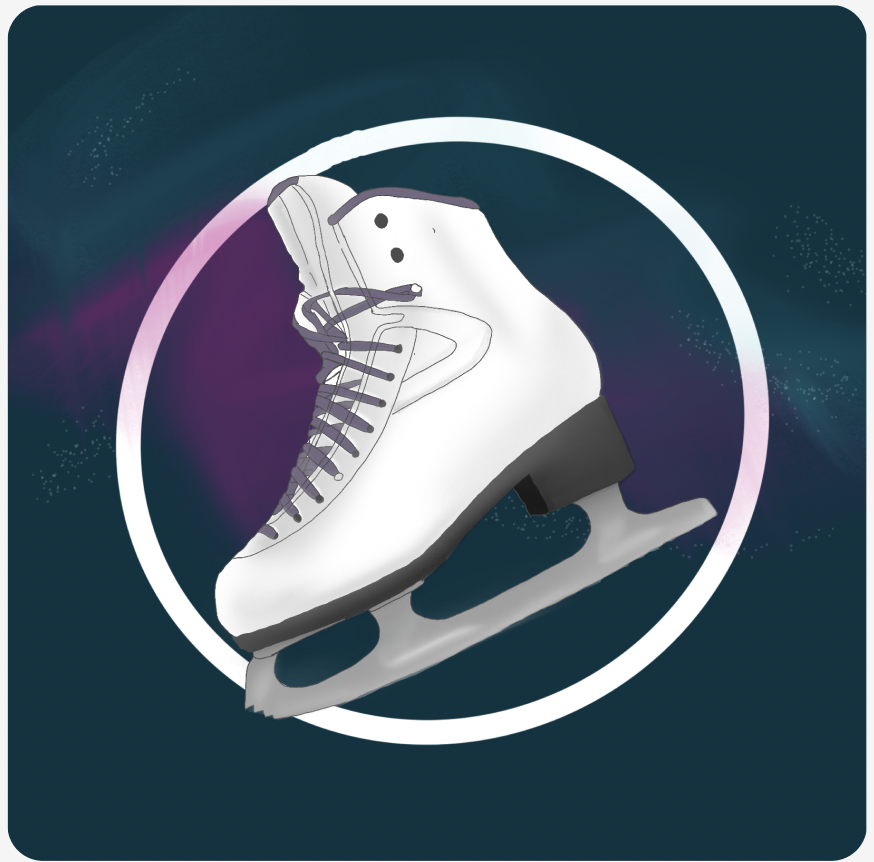
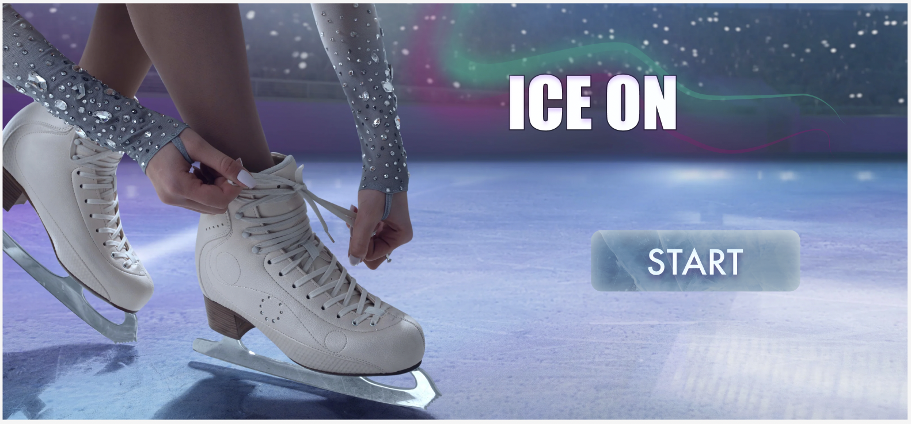
What is it?
ICE ON is a mobile game app designed for figure skating enthusiasts by being able to perform and get scored.
Description: Players can choose from a variety of skating moves and perform them to earn points.
The Design
The design shows how users would interact with the app. They would be performing with a combination of skills of their choosing and then scored for points. The design also includes a scoring system to track performance, as well as a ranking screen.
The aurora lights were the main inspiration for the app's visual design, creating a dynamic and engaging user experience. I wanted to keep the colors of the lights consistent to also portray the icy theme. I created all of the UI elements like icons and buttons using figma and drew the logo using Procreate.
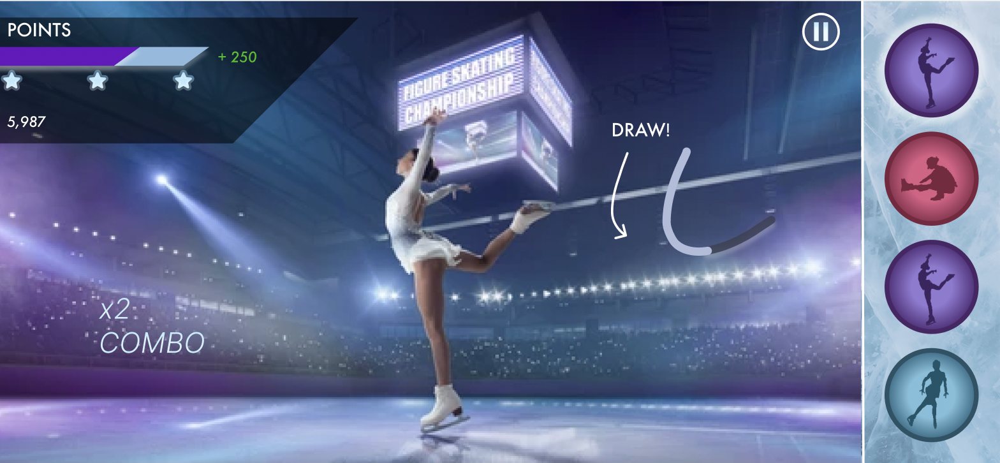
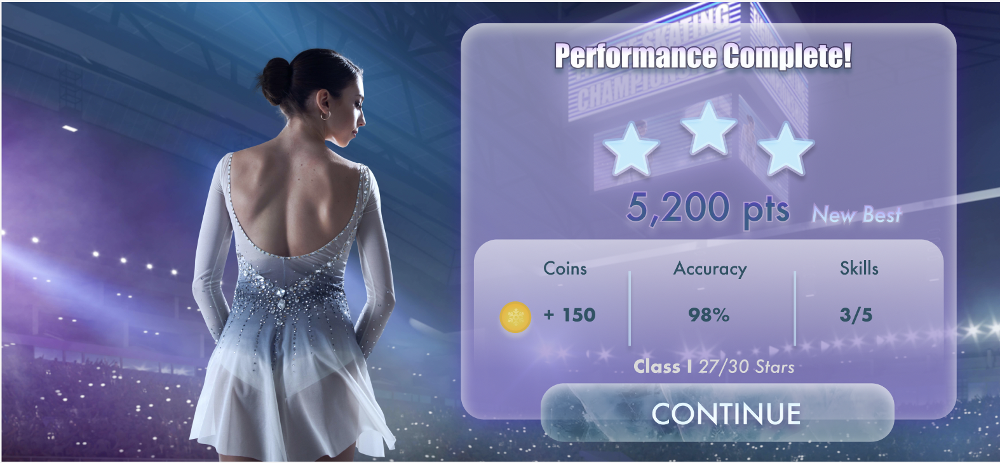
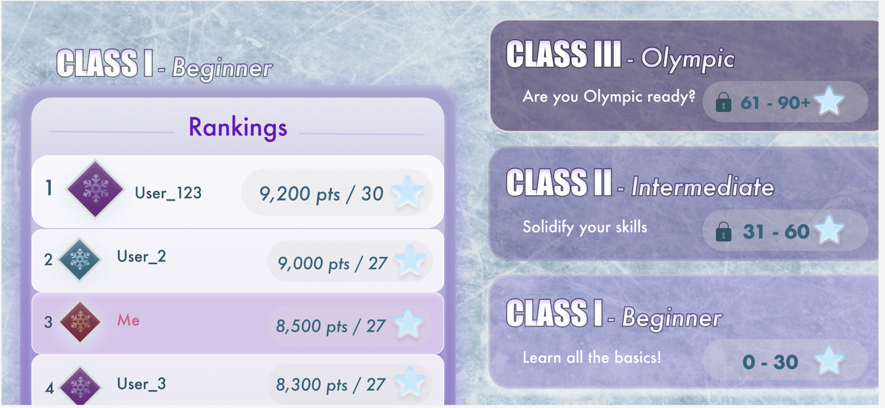
Smoothie Builder | Web App Design
Created a responsive web application prototype for customizing and ordering smoothies.
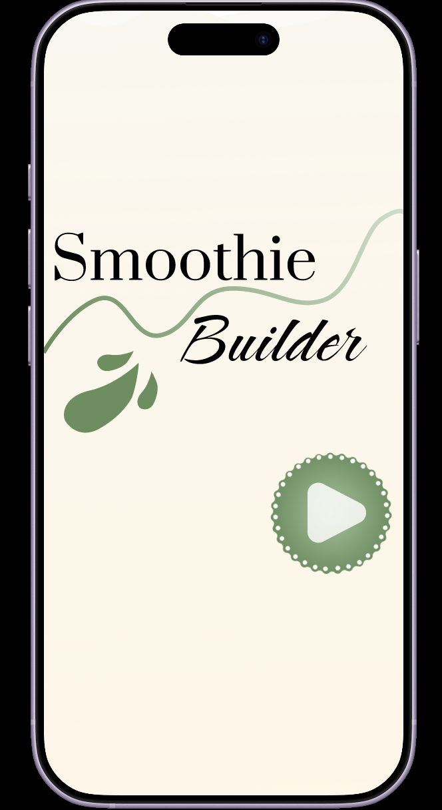
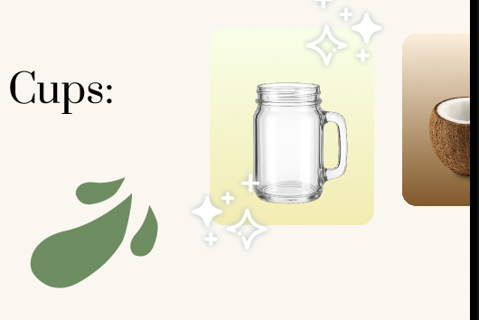
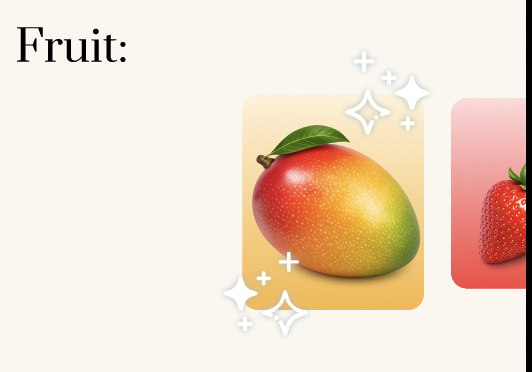
What is it?
This web application prototype is designed to make building smoothies for an order be more fun and efficient.
Description: Users can pick between different cups and fruits to build their perfect smoothie.
The Design
The design uses green accents inspired by Mexican art to convey a sense of sustainability and freshness. It is also inspired by selection games like dress up games in which you can swipe and choose the items you like.
The title screen includes a play button with a design inspired by papel picado, which is a traditional Mexican paper cutting art. I chose to add this element to add my own personal touch as well as it reminding me of nice cold fruits on a hot Mexico summer day! The droplets around the logo, are also inspired by Mexican art, in this case drop shapes that are usually found in Mexican ceramic mugs
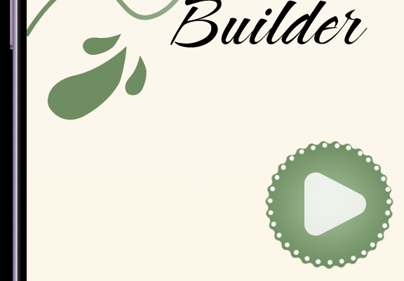
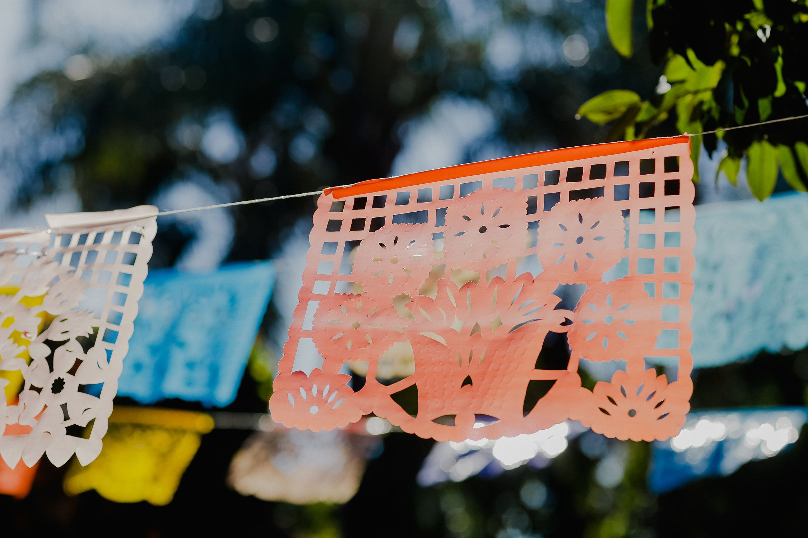
Contact
Feel free to reach out to me!
- Email: diannahuitronc@gmail.com
- LinkedIn: linkedin.com/in/dianna-huitron-a78786357
- GitHub: github.com/dianna-huitron